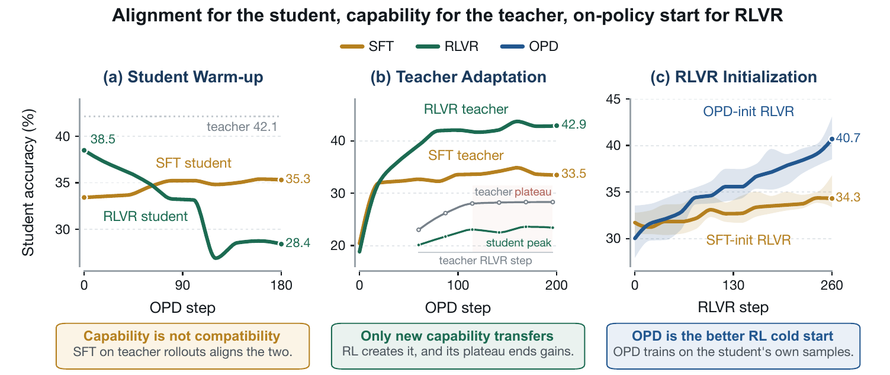

Understanding the Synergy between SFT, RLVR, and OPD in LLM Post-Training
A better model today does not always make a better student tomorrow. We study how supervised fine-tuning, reinforcement learning, and on-policy distillation prepare a model for the stage that comes next.
Three tools, one pipeline
Modern post-training stacks three tools. Each one learns from a different signal:
Supervised fine-tuning
Learns from fixed expert demonstrations, token by token.
RL with verifiable rewards
Tries its own answers and learns from sparse outcome rewards.
On-policy distillation
Tries its own answers; a teacher scores each sampled token.
These tools are usually studied one at a time. But in a real pipeline, each stage changes the model the next stage receives. That raises the composition problem: in what order should the stages run, for how long, and when should one hand off to the next?
What we compose
The main composition study uses one student–teacher pair and varies how the models are prepared. There are two lanes: the teacher can be adapted before teaching, and the student can be prepared for distillation or for a later RLVR stage. We study three handoffs in separate comparisons.
A bigger teacher is not automatically a better one. At the common 200-step comparison across nine student–teacher pairs (2× to 53× size ratios), the largest teacher (Qwen3-32B) gave none of the three students its highest accuracy. How well the student and teacher fit matters, not just teacher strength.
Closer teacher matching does not guarantee higher accuracy. The student can keep getting closer to the teacher after its task accuracy has already peaked, so teacher matching alone is not a reliable way to choose when to stop.
The reinforceable fraction helps assess student–teacher fit for OPD. The reinforceable fraction measures the share of the student’s own tokens that get a positive signal from the teacher at the start. It helps where reverse KL alone misses the difference, but it is a diagnostic, not a full explanation.
Since each stage reshapes that fit, the order of stages matters. Here is what we found at each handoff.
What we found at each handoff
Brief SFT is a better OPD warm-up in this test
SFT warm-up, then OPD
35.4%
OPD peak after 150 SFT warm-up steps, vs. 33.6% without warm-up; finishes at 35.3%
RLVR warm-up, then OPD
38.5% → 28.4%
starts stronger, then ends at 28.4% after distilling from the same teacher
A stronger student is not always an easier one to teach. In this sweep, the benefit of SFT largely levels off after 75–150 warm-up steps. The first validation-loss plateau is a candidate signal of diminishing returns, not a universal stopping rule.
Strengthen the teacher with RLVR
RLVR-adapted teacher
38.5–43.7%
OPD peaks across adapted-teacher checkpoints, vs. 33.6% from the off-the-shelf teacher (student starts at 18.9%)
STaR-style SFT teacher
little gain
barely improves the teacher and brings little downstream benefit
In this adaptation sweep, RLVR lifts the teacher from 42.1% to about 57%. Downstream OPD peak gains track those teacher gains and largely flatten once teacher accuracy plateaus. Some OPD runs still regress after their peak. The comparison does not establish that RLVR-trained capability transfers better than capability from other methods at matched teacher accuracy.
OPD gives RLVR a stronger start in this comparison
OPD then RLVR
38.5–43.1%
after 260 RLVR steps, and still improving
SFT then RLVR
33.4–36.8%
after 260 RLVR steps, from a similar starting accuracy
The gap widens over the studied 260-step RLVR horizon. Initial policy entropies overlap despite different outcomes, so scalar entropy alone is insufficient to choose the initialization. Among the tested OPD checkpoints, the highest-accuracy one (step 50) also gives the best RLVR endpoint (43.1%). This supports handing off near the observed task-accuracy peak, but the reported peak comparisons are retrospective rather than checkpoints chosen on an independent validation set.

Putting it together: a simple recipe
Handoffs 1 and 2 give the core of our recipe: strengthen the teacher with RLVR, warm the student briefly with SFT, then distill.
Average accuracy after 200 OPD steps
Together they add 14.6 points over vanilla OPD, a 50% relative gain. Most of it comes from the stronger teacher; the student warm-up adds another 1.6 points. All four settings use the same 200 OPD steps, but the prepared runs also spend extra training before OPD, so this is not a comparison at equal total compute.
Accuracy is the unweighted average of seven benchmark mean@4 scores, where mean@4 averages correctness over four sampled responses: AIME 2024, AIME 2025, AMC 2023, MATH-500, Minerva Math, OlympiadBench, and GPQA-Diamond. These are values at the 200-step endpoint, so they differ from the peak values quoted in the handoffs above.
Good practices
These are practical lessons from the tested settings, rather than a universal ordering or stopping rule.
- Any stageJudge a stage by two things: what it adds now, and what it leaves for the next stage.
- PairingDon’t assume a bigger teacher is better. Check how well the student and teacher fit.
- RLVR teacherIn the teacher-adaptation sweep, RLVR improves downstream OPD. Monitor teacher accuracy for diminishing returns, then choose a checkpoint using downstream OPD validation; a high peak may not persist.
- SFT studentFor the studied pair, try a brief SFT warm-up. Use the first validation-loss plateau as a candidate point to check whether more SFT still helps downstream OPD.
- Before OPDFor this tested pair, brief SFT is a better OPD preparation than RLVR: the RLVR-prepared student loses accuracy when distilled from the same fixed teacher.
- OPD → RLVRIn the main Qwen3-4B comparison, OPD checkpoints outperform SFT checkpoints under subsequent RLVR despite similar initial accuracy. Check task accuracy when choosing the handoff; closer teacher matching alone is insufficient.
Takeaway
Strengthen the teacher with RLVR, briefly warm the student with SFT, then distill with OPD. This raises accuracy from 29.2% to 43.8% for our main Qwen3 pair on math and science. Separate experiments favor OPD over SFT as preparation for further RLVR. Generalization to larger models, other domains, and longer training remains open.
Cite this work
@misc{acikgoz2026synergy,
title={Understanding the Synergy between SFT, RLVR, and OPD in LLM Post-Training},
author={Emre Can Acikgoz and Yang Li and Zeyu Leo Liu and Srijan Bansal
and Dilek Hakkani-T{\"u}r and Shafiq Joty and Semih Yavuz},
year={2026},
eprint={2609.31900},
archivePrefix={arXiv},
primaryClass={cs.LG},
url={https://arxiv.org/abs/2609.31900}
}